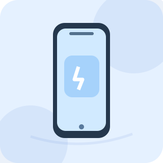

デジタル
スマホの充電器とケーブルは、端子・出力・使い方で選ぶ

手持ちのケーブルが使えるか分からないときは、スマホ側と充電器側の差し込み口を一つずつ確認します。規格や対応出力はスマホの機種によって異なるので、まずメーカーの説明書を開くと探す条件が絞れます。
端末側と充電器側の端子をメモする
スマホ側の端子がUSB-Cでも、手元の充電器の差し込み口がUSB-Aなら、手持ちの組み合わせによって必要なケーブルが変わります。商品ページでは「両端USB-C」のようにケーブル両端の表記を確認。充電と有線データ転送の両方に使う場合は、ケーブルのデータ転送対応も別に読みます。
端末の推奨条件と、充電器のポートごとの値を合わせる
急いで充電する用途なら、端末の公式仕様に対応する充電方式や推奨アダプターが載っているか確認します。USB Power Delivery（USB PD）を使う機器は、充電器も対応しているか見ます。充電器の「最大」表示が全ポート合計の場合もあるため、単独使用と同時使用の仕様表を読み分けてください。
仕様表の読み方の例です。単独で30 W、同時使用では20 W＋10 Wと書かれた製品なら、二台つなぐと片方のポートで使える出力は20 Wです。ケーブル側にも対応できる電力の表示があるので、使う機器に合うものを選びます。
使う場所で必要な長さを測る
枕元なら、コンセントから置き場所までケーブルが実際に通る長さを測り、角に沿わせる分と持ち上げるときの余裕を足します。一つの充電器を外出にも使うなら、重さのほか、壁のコンセントの隣の差し込み口を塞がないか、横幅も見ておきましょう。
買う前に確認すること
- スマホ側と充電器側それぞれの端子
- 使う充電方式と同時使用時のポート別出力
- 必要な長さと、データ転送の有無